|
|
|
Topic: CL294 |
Home for PTO Axis |
|
|
There are 6 Modes of operation:
1) Move to Switch 1 and Creep to Switch 2 and Halt
2) Move to Switch 1 and Halt
3) Move to Switch 1 and Deceleration
4) Move to Switch 1 and Return to Switch 1
5) Move to Switch 1 and Decelerate to a Stopping distance (Registration type move)
6) Set Current Position To Immediate Value
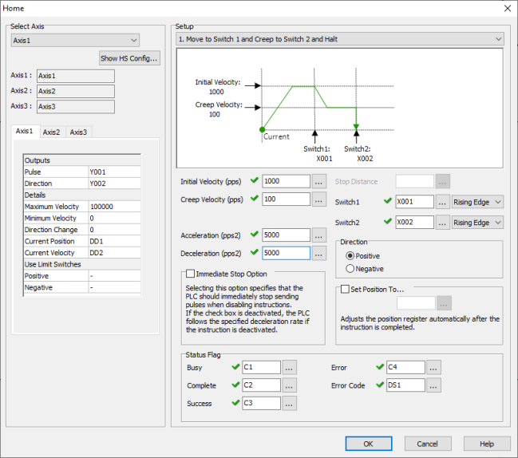
Select Axis: The PTO Axis must be created in the High Speed I/O Setup before placing the Home Instruction into ladder.
Axis Names: These are the Axis names as defined in the High Speed I/O Setup.
Axis Settings: This is a read-only view of the Axis settings from the High Speed I/O Setup.
Initial Velocity: Constant or DD Register. The speed at which the Home search will begin.
Creep Velocity: Constant or DD Register. Used with Mode 1 and Mode 4. A slower velocity used to approach the second Switch.
Acceleration: Constant or DD Register. The change of rate value used only during Acceleration. (Pulses Per Second Squared)
Deceleration: Constant or DD Register. The change of rate value used only during Deceleration. (Pulses Per Second Squared)
Direction: This setting selects the Direction of Travel for the Home search.
Stop Distance: Constant or DD Register. This setting is only used with Mode 5.
Switch 1 and 2: Must be an external Input X bit. For their specific function in each Mode, see the Mode Descriptions and diagrams below.
Rising Edge or Falling Edge: Select the Active Edge for the Switch Inputs. Normally Open switches will use Rising Edge, Normally Closed switches will use Falling Edge.
Immediate Stop Option: The behavior of an Aborted Move can be chosen.
Enabled: Selecting this option specifies that the PLC should immediately stop sending pulses when disabling instructions. This will abort the Move abruptly and likely lose the Axis Home reference if traveling at high speeds.
Disabled: If the check box is deactivated, the PLC follows the specified deceleration rate if the instruction is deactivated. The Axis will decelerate until reaching zero velocity. During the Abort deceleration the Switch Inputs are ignored.
Set Position To: When enabled, the Current Position Register is set to the Constant or DD Register value when the instruction is completed.
Status Flag behavior with Immediate Stop Option Disabled
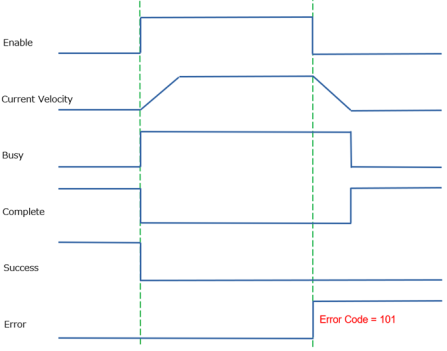
Status Flag behavior with Immediate Stop Option Enabled

Busy: This C bit turns ON while the instruction is in operation and controlling the Axis. Only a single instruction can be in control of each Axis during any moment of time. This bit turns OFF when the instruction is Complete by Success or by Error.
Complete: This C bit turns ON when the instruction is Complete by Success or by Error. It stays ON until the instruction is re-enabled.
Success: This C bit turns ON to indicate the Axis has reached the commanded Target Position.
Error: This C bit turns ON to indicate a failure of the Instruction or Axis. It stays ON until the instruction is re-enabled. The Value in the Error Code register will indicate the problem.
Error Code: Assign a DS or DD register to store the Numeric Error Code.
|
|
Note: The System Bits SC150-SC152 “_PTO_AxisX_Ready_Flag” provide status information. |
|
Accelerate to the speed of Initial Velocity.
Move at Initial Velocity until Switich1 turns ON.
Decelerate to Creep velocity.
Moves at Creep speed until Switch2 is turned ON.
Immediately stops when it reaches Switch2.
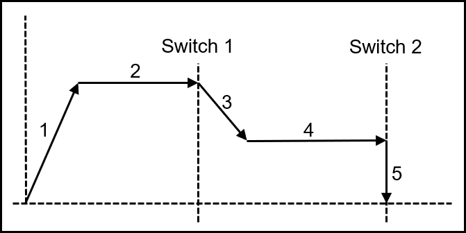
Disabling during any segment will cause the Error Bit to turn ON, and the Error Code 101.
The Axis will use the Deceleration Rate to bring the Axis to a Stop.
Switch inputs are ignored after the instruction is disabled.
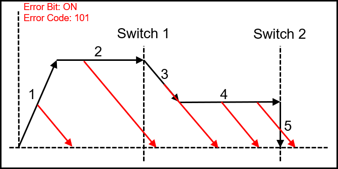
When Switch1 is turned on during acceleration, the Error Bit is turned ON and Error Code 109 is set.
If Switch2 is turned on before Switch1, the Error Bit is turned ON and Error Code 109 is set.
If Switch2 is turned on during deceleration, the Error Bit is turned ON and Error Code 109 is set.
Switch1 cannot be shared with Limit Switch.
Switch2 can be shared with Limit Switch.
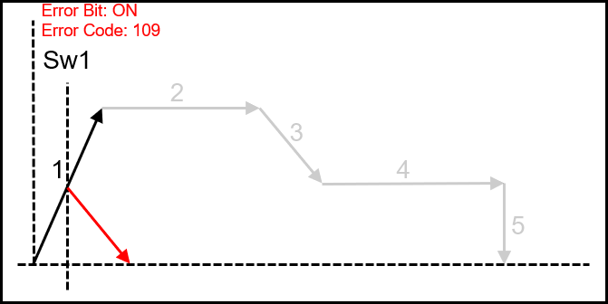
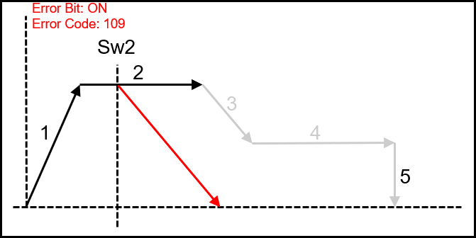
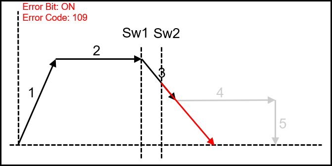
Accelerate to the speed of Initial Velocity.
Move at Initial Velocity until Switich1 turns ON.
Immediately stops when it reaches Switch1.
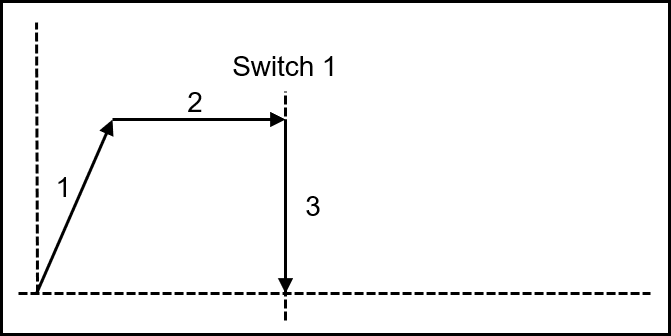
Disabling during any segment will cause the Error Bit to turn ON, and the Error Code 101.
The Axis will use the Deceleration Rate to bring the Axis to a Stop.
Switch inputs are ignored after the instruction is disabled.
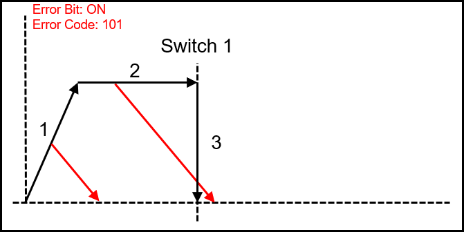
When Switch1 is turned on during acceleration, the Error Bit is turned ON and Error Code 109 is set.
Switch1 can be shared with Limit Switch.
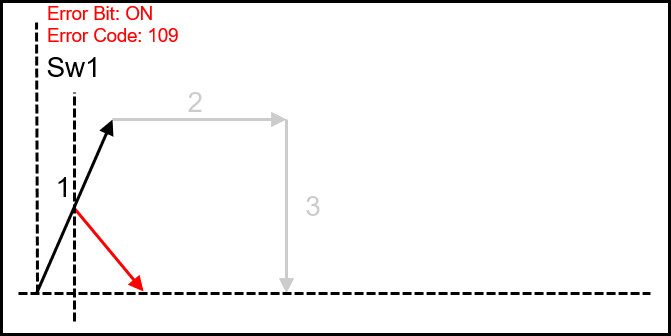
Accelerate to the speed of Initial Velocity.
Move at Initial Velocity until Switich1 turns ON.
Decelerate according to the Deceleration setting and stop.
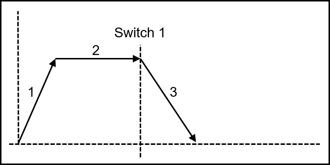
Disabling during any segment will cause the Error Bit to turn ON, and the Error Code 101.
The Axis will use the Deceleration Rate to bring the Axis to a Stop.
Switch inputs are ignored after the instruction is disabled.
When Switch1 is turned on during acceleration, the Error Bit is turned ON and Error Code 109 is set.
Switch1 cannot be shared with Limit Switch.
Accelerate to the speed of Initial Velocity.
Move at Initial Velocity until Switich1 turns ON.
Decelerate to a stop.
Accelerate to Creep Velocity towards Switch1.
Immediately stops when it reaches Switch1.
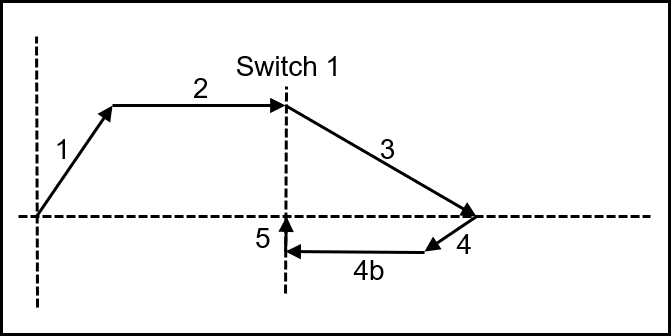
Disabling during any segment will cause the Error Bit to turn ON, and the Error Code 101.
The Axis will use the Deceleration Rate to bring the Axis to a Stop.
Switch inputs are ignored after the instruction is disabled.
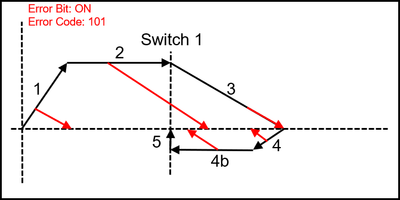
When Switch1 is turned ON during acceleration, the Error Bit is turned ON and Error Code 109 is set.
The deceleration distance of section 3 must be longer than the Switch1 activation distance. If the switch is still active at section 4 the Error Bit is turned ON and Error Code 109 is set.
Switch1 cannot be shared with Limit Switch.
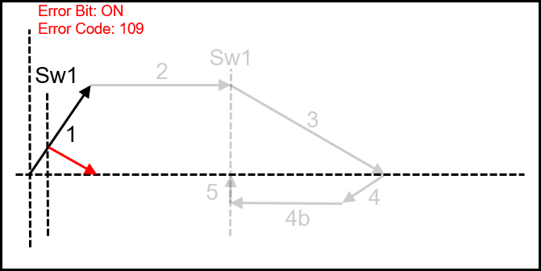
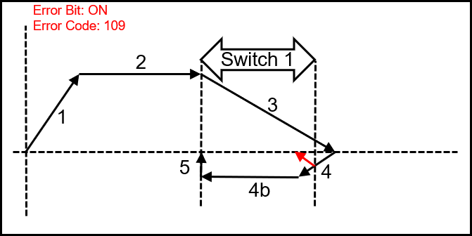
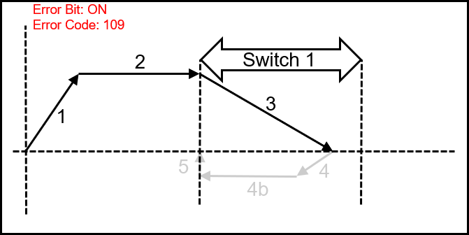
Accelerate to the speed of Initial Velocity.
Move at Initial Velocity until Switich1 turns ON.
It will decelerate to the value set in Stop Distance and stop.
Disabling during any segment will cause the Error Bit to turn ON, and the Error Code 101.
The Axis will use the Deceleration Rate to bring the Axis to a Stop.
Switch inputs are ignored after the instruction is disabled.
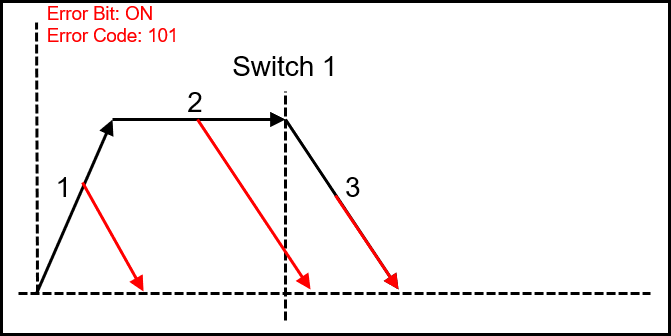
When Switch1 is turned ON during acceleration, the Error Bit is turned ON and Error Code 109 is set.
Switch1 cannot be shared with Limit Switch.
Sets an error code if the distance traveled from the Position where Switch1 is turned ON to the Stop Distance exceeds the Current Position range (-2147483648 to 2147483647).
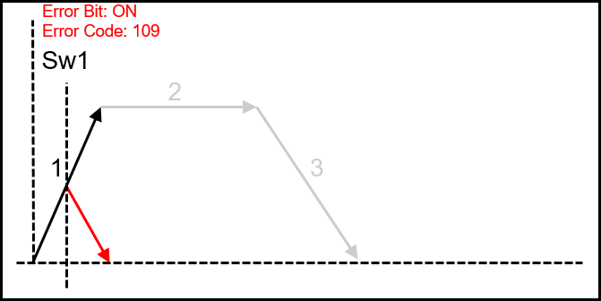
Velocity Move for PTO Axis
Position Move for PTO Axis
Pulse Train Output
Pulse Width Modulation